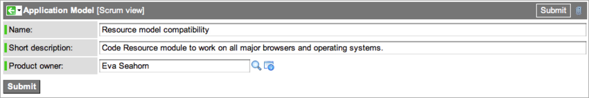
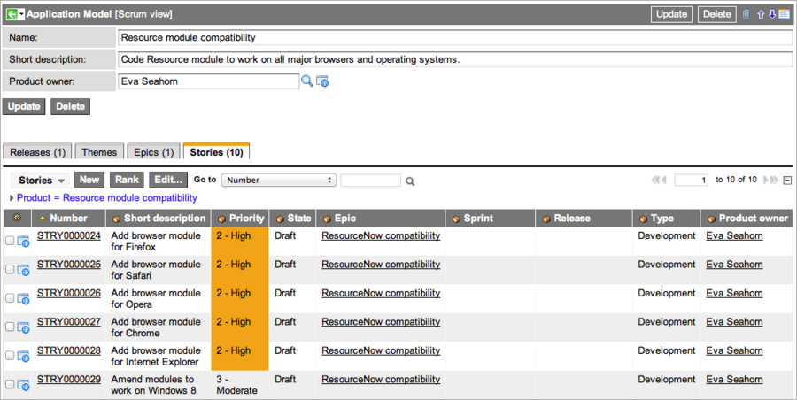

Scrum Products
| |
Note: This article applies to Fuji and earlier releases. For more current information, see Manage Products at http://docs.servicenow.com
The ServiceNow Wiki is no longer being updated. Visit http://docs.servicenow.com for the latest product documentation. |
Contents
1 Overview
A scrum product is an arbitrary classification that represents an item under development. A product organizes themes, epics, and stories of similar functionality into a single context. Stories represent the work required to build the product. The list of stories in a product is referred to as the product backlog. A product owner is responsible for keeping the product backlog organized and for selecting the stories for a particular release.
2 Prerequisite Tasks
Before the product owner can create a scrum product, the ServiceNow administrator must complete the initial setup tasks in Setting up the Scrum Process Application. For a complete list of the tasks required to use SDLC Scrum Process and links to the necessary procedures, see Scrum Process Flow.
3 Creating a Product in Scrum
Only users with the scrum_product_owner role or the scrum_release_planner role can create products.
- Navigate to SDLC (Scrum Process) > Planning > Products.
- Click New.
- A blank Application Model form appears.
- Complete the form, using a unique and descriptive name.
- 
- The Product owner field displays the logged in user's name. If necessary, select another product owner from the list.
- Click Submit.
- Related lists for releases, themes, epics, and stories appear.
- You can create records now by clicking New in a related list or continue to the next page in the flow.
- The stories you add create the product backlog. You cannot add a theme, epic, or story to more than one product or release at a time.
- 
{kind=link}
{kind=link}
3.1 Ranking Stories
ServiceNow provides an optional plugin called Context Ranking, which enables all scrum users to manually sort a related list of stories by priority. A product owner or release planner uses this tool to establish the order in which he or she wants the stories worked. Stories ranked in a related list (in the Product, Release, and Sprint forms) appear in the same order in the planning board when the appropriate backlog is displayed. Conversely, stories ranked in the planning board appear in that order when viewed in the related list in the form. Users can switch the view in a Stories related list from ranked to any sort order without changing the ranking in the planning board.
To rank stories in a related list:
- Ensure that the Context Ranking plugin is activated.
- In the Stories related list, click Rank.
- A dialog box appears, allowing you to arrange the stories in any order, such as by priority.
- Click and drag each story into position using the handle icon to the left of the story number.
- When you are done, click the X in the upper right corner to close the list.
- The Stories related list is not sorted by your ranking initially.
- To view the related list in its ranked order, open the context menu from the related list and select Sort by rank.
- To return the sort order of the list to an unranked state, click once in the heading of any column that contains data.
- ServiceNow uses this ranked list to display the appropriate backlog in the planning board. For example, if you rank stories in the Stories related list in the Release form, the release backlog in the planning board uses the same ranking to display the stories. Conversely, scrum masters, product owners, and release planners can create a new ranking order for the Stories related list by rearranging the list of stories in the planning board.
{kind=link}
{kind=link}
4 What Do I Do Next?
After creating a product, create user stories to associate with the product. See Themes, Epics, Stories, and Tasks in Scrum for details.